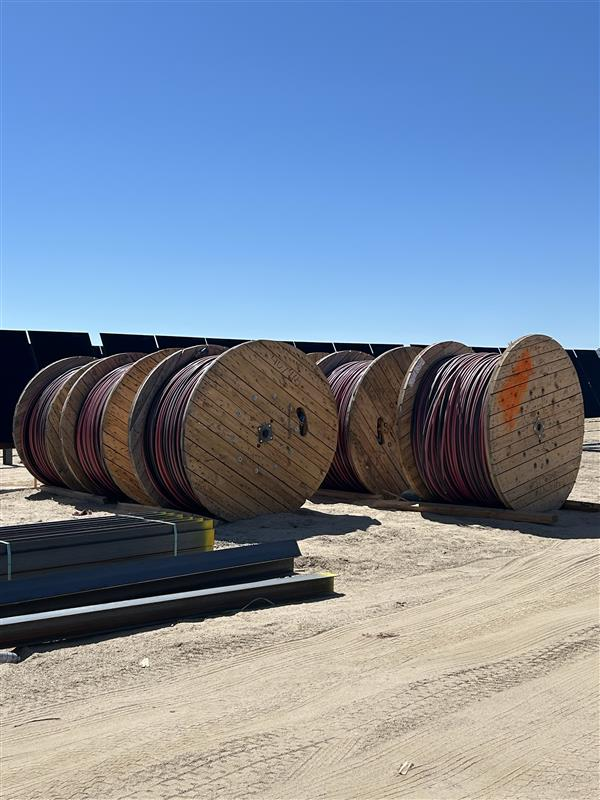
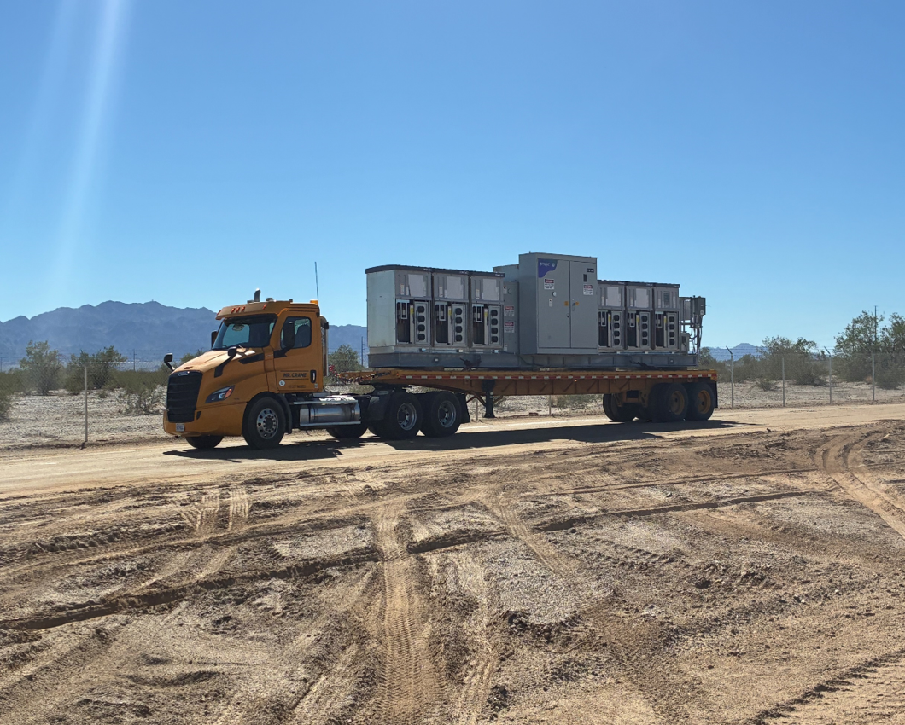
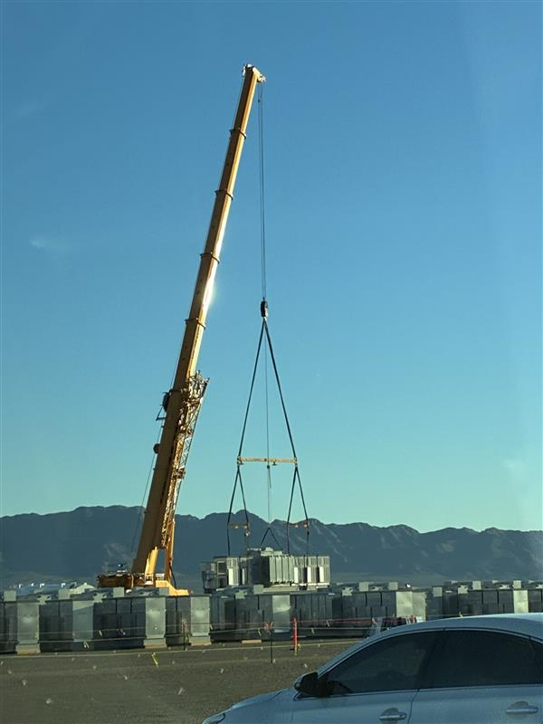
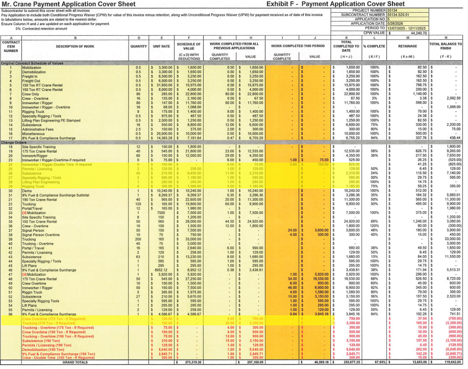

Overview: Post-installation excess material inventory across Easely I and II projects. Significant cable surplus documented including MV Cable spools and DC Cable (Trench) materials. Total excess material value: $763,727.23 (Easely I) and $136,640.00 (Easely II). Materials cataloged for recycling and disposition.

Cable Spools On-Site
Click images below to view full-screen inventory documentation and detailed material listings.
Key Findings: Excess materials primarily consist of high-value cable inventory. Easely I shows significant MV Cable overage due to preliminary design variance. Easely II excess limited to DC Cable Trench materials. All materials documented with reel IDs and manufacturing dates for disposition tracking. Recycling vendor engagement underway for material recovery and environmental compliance.
Overview: Inverter procurement and installation documentation for Easely I and II projects. 83 inverters deployed across Easely Solar with 14 unique circuits. 160 inverters deployed across Bellefield Solar with 28 circuits. Total installation value and logistical coordination across dual-site delivery and setup.

Equipment Transport

Crane Installation

Payment Documentation
Key Details: Inverter procurement managed through multiple vendors with staggered delivery schedule. Site-specific training completed for all installation personnel. Payment applications processed monthly with documentation of equipment receipt and installation progress. As-built documentation synchronized with BOM updates for final reconciliation.
Placeholder for inverter delivery timeline and status tracking.
Easely II: Non-Tracker Piles Received by Week (After 8/6/2025)
Easely I: Pile Deliveries
Gerdau pile procurement overview and key metrics for both Easely I and II projects.